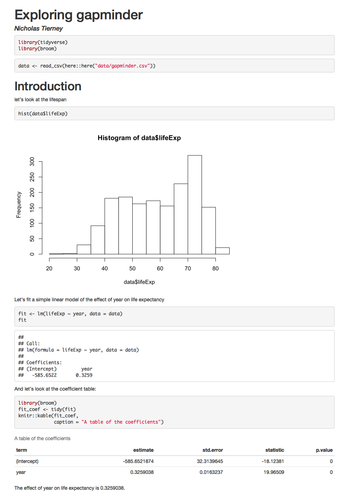

4 Rmarkdown
What is R Markdown? from RStudio, Inc. on Vimeo.
4.1 What is Rmarkdown?
(Note: content from this section was adapted from rm4sci,with permission from Nick Tierney)
rmarkdown provides an environment where you can write your complete analysis, and marries your text, and code together into a rich document. You write your code as code chunks, put your text around that, and then hey presto, you have a document you can reproduce.
For example, look at the following report:

How did we generate it?
---
title: "Exploring gapminder"
author: "Nicholas Tierney"
output: html_document
---
```{r library, message = FALSE}
library(tidyverse)
library(broom)
```
```{r data-read-in, message = FALSE}
data <- read_csv(here::here("data/oz_gapminder.csv"))
```
# Introduction
let's look at the lifespan
```{r hist-life-exp}
hist(data$lifeExp)
```
Let's fit a simple linear model of the effect of year on life expectancy
```{r example-lm}
fit <- lm(lifeExp ~ year, data = data)
fit
```
And let's look at the coefficient table:
```{r coef-table}
library(broom)
fit_coef <- tidy(fit)
knitr::kable(fit_coef,
caption = "A table of the coefficients")
```
The effect of year on life expectancy is `r fit_coef$estimate[2]`.We render this code and it creates this report!
It has a plot, it has a table, we even refer to some of the values in the text - the last line of the report looks at the effect of year.
But what if the data changes? At the moment we are looking at only Australia - say we get the full dataset, what happens then?
Say you’d created your report by hand in microsoft word, and with a graphical user interface software.
You would need to:
- Go back to the GUI, re run the analysis
- Import the results into Excel
- Create your graph
- Copy the graph into Word
- Copy the results of the coefficients into the text
- Copy the results of the coefficient table into the text.
This is painful.
And what if someone wants to know exactly how you did your analysis?
This process isn’t exactly sharable.
But if you did it in R Markdown?
Just update the data, and render the document again, and get an updated document:

The results are different!
And we just pointed it to some different data. Then re-rendered it.
That’s it.
4.2 Markdown
In 2004, John Gruber, of daring fireball created Markdown, a simple way to create text that rendered into an HTML webpage.
4.2.1 A brief example of markdown
For example,
- bullet list
- bullet list
- bullet list
1. numbered list
2. numbered list
3. numbered list
__bold__, **bold**, _italic_, *italic*
> quote of something profound```r
# computer code goes in three back ticks
1 + 1
2 + 2
```Would be converted to:
- bullet list
- bullet list
- bullet list
- numbered list
- numbered list
- numbered list
bold, bold, italic, italic
quote of something profound
# computer code goes in three back ticks
1 + 1## [1] 22 + 2## [1] 4With very little marking up, we can create rich text, that actually resembles the text that we want to see.
Some other nice features of Markdown include:
| feature | markdown | rendered |
|---|---|---|
| superscript | 2^nd^ |
2nd |
| subscript | CO~2~ |
CO2 |
| strikethrough | ~~mistake~~ |
|
| links | [text](http:://www.example.com/your-link-goes-here) |
text |
| images |  |
 |
4.3 Where to learn about Rmarkdown
-
- Provides a guide for rmarkdown targeted at scientists who need to do scientific writing and computing. It covers motivation for using rmarkdown, installation issues, using RStudio, file paths, keyboard shortcuts, inserting figures and tables and how to use captions, references, and other output styles. It is designed with a 3 hour course in mind.
Communicating with Data via R Markdown by Emi Tanaka
- Content from Emi’s COMBINE workshop in 2019 (materials on github here).
R Markdown: The Definitive Guide
- The full reference manual to rmarkdown
-
- A more targeted guide to “how to do X in rmarkdown”